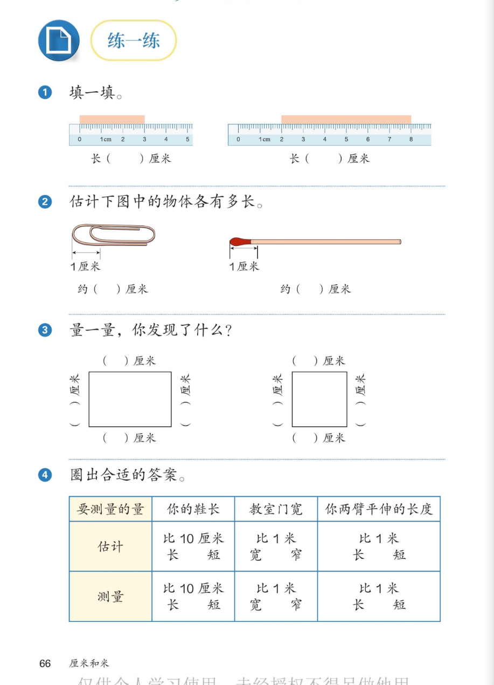

🔊 四、厘米和米 · 课本第 66 页 · 练一练 1~4
人教版《数学》二年级上册 · 有声图文带读 · 先想后看解析 · 读尺填数 · 估长度 · 量图形 · 圈答案
题数
4
认知
2
强化
3
拓展
1
本页重点
两端相减读尺 · 以1厘米估计 · 对边相等 · 先估后量
🎧 分两步学：
① 解析教材图片
——纯声音读图，读到哪一块哪一块闪动提示；关键处先倒计时让你思考，再在图片下方给出解析并朗读。
② 分层提问练习
——六道分层题（认知 / 强化 / 拓展），先思考再展开解析、朗读参考答案；这一步不再回到图片。
也可以随时点任意一句话、图上任意一块单独听；点课本文字卡还会展开答案。
教材图片（点块听读，读到哪块哪块闪）

📖 人教版《数学》二年级上册 · 课本第 66 页 · 图片仅供个人学习，版权归人民教育出版社所有
🤔 想一想（点我可跳过）
课本的文字（点句子：听读 + 看答案）
第 1 题
填一填（两把尺）
看答案 ▾
左图：纸条从刻度
0
到
3
→ 长
3 厘米
；
右图：纸条从刻度
2
到
8
→ 8−2=6，长
6 厘米
；
💡 不从 0 开始，就用末端刻度减起点刻度
第 2 题
估计物体有多长
看答案 ▾
用图上的
1 厘米
作标准去比；
回形针大约
2 个
1 厘米 → 约
2 厘米
；
火柴大约
5 个
1 厘米 → 约
5 厘米
；
💡 估计：数一数包含几个 1 厘米
第 3 题
量一量，发现了什么
看答案 ▾
长方形：
上下两边相等
，
左右两边相等
（对边相等）；
正方形：
四条边都相等
；
具体厘米数要用尺子
实际量一量
再填。
第 4 题
圈出合适的答案
看答案 ▾
鞋长：估计比 10 厘米
长
，测量比 10 厘米
长
；
教室门宽：比 1 米
宽
；
两臂平伸：比 1 米
长
；
💡 先估后量，用身体尺帮忙
分层提问练习（先想后看解析）
📏
认知
第 1 题：两把尺上的纸条各长几厘米？
看解析
🤔 想一想
解析：
左：
3 厘米
（0 到 3）；
右：
6 厘米
（8−2=6）。
🟦
认知
第 3 题：量长方形、正方形，发现了什么？
看解析
🤔 想一想
解析：
长方形：
对边相等
；
正方形：
四条边都相等
。
📎
强化
第 2 题：不用尺子，怎么估计回形针和火柴的长度？
看解析
🤔 想一想
解析：
用
1 厘米
作标准去数；
回形针约 2 厘米，火柴约 5 厘米。
⭕
强化
第 4 题：表格里三个量各圈哪个？
看解析
🤔 想一想
解析：
鞋长：比 10 厘米
长
；
门宽：比 1 米
宽
；两臂平伸：比 1 米
长
。
🤔
强化
右图为什么要用 8 减 2？
看解析
🤔 想一想
解析：
纸条从刻度
2
开始，不从 0 开始；
末端刻度 − 起点刻度 = 长度：8−2=
6 厘米
。
💡 想想 0 到 2 那一段没有纸条
🌈
拓展
估计和测量有什么不一样？
看解析
🤔 想一想
解析：
估计=先猜，测量=用尺子量准；
先估后量、比一比，眼力越来越准。
🌈 会估计也是大本领
① 解析教材图片
② 分层提问练习
⏹ 停止
纯声音 + 高亮跟随 · 想好才出解析
← 返回导航